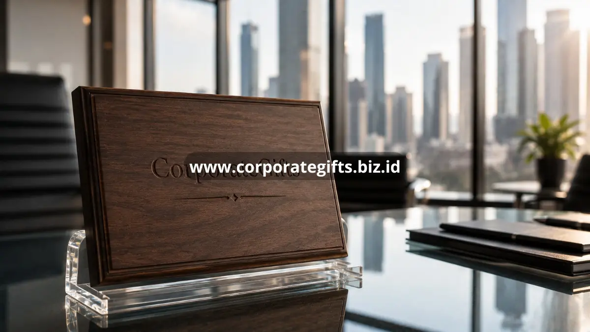

Poin Penting:
- Awal kerja sama adalah momen strategis untuk membangun kesan pertama yang kuat.
- Perayaan akhir tahun menjadi momen paling umum untuk memberikan hadiah corporate.
- Apresiasi kinerja karyawan memperkuat rasa dihargai dan loyalitas terhadap perusahaan.
- Acara khusus seperti peluncuran produk menambah nilai simbolis pada hadiah yang diberikan.
- CorporateGifts membantu perusahaan menyiapkan hadiah corporate sesuai momen yang direncanakan.
Perusahaan memilih momen-momen ini karena nilai emosional yang melekat pada waktu tersebut membuat hadiah lebih mudah diingat dibanding pemberian tanpa konteks yang jelas. Ketepatan waktu pemberian hadiah corporate turut menentukan seberapa besar dampaknya terhadap loyalitas klien maupun keterikatan karyawan terhadap perusahaan.
Kapan Waktu Ideal Perusahaan Memberikan Hadiah Corporate?
Momen Awal Kerja Sama dan Onboarding Klien
Pemberian hadiah corporate pada awal kerja sama membantu menciptakan kesan pertama yang positif. Klien atau mitra baru yang menerima sambutan berupa hadiah bermakna cenderung merasa dihargai sejak tahap awal, yang pada gilirannya membangun fondasi kepercayaan untuk hubungan bisnis jangka panjang.
Perayaan Akhir Tahun dan Hari Besar
Akhir tahun tetap menjadi momen paling umum bagi perusahaan untuk memberikan hadiah corporate kepada klien, mitra, maupun karyawan. Momen ini secara alami membawa nuansa refleksi dan apresiasi atas kerja sama yang telah terjalin sepanjang tahun, sehingga hadiah yang diberikan terasa lebih relevan secara emosional.
Apresiasi Kinerja dan Ulang Tahun Karyawan
Selain untuk pihak eksternal, hadiah corporate juga efektif digunakan sebagai bentuk apresiasi internal, misalnya saat karyawan mencapai target kerja tertentu atau merayakan hari jadi bekerja di perusahaan. Momen semacam ini memperkuat rasa memiliki karyawan terhadap perusahaan tempat mereka bekerja.
Mengapa Ketepatan Waktu Memengaruhi Dampak Hadiah Corporate?
Hadiah yang sama bisa memiliki dampak yang jauh berbeda tergantung kapan ia diberikan. Hadiah yang datang tanpa konteks jelas cenderung dipandang sebagai formalitas semata, sementara hadiah yang diberikan tepat pada momen bermakna, seperti pencapaian target atau perayaan tahunan, lebih mudah diasosiasikan dengan perhatian tulus dari perusahaan.
Ketepatan waktu ini juga memberi ruang bagi perusahaan untuk menyampaikan pesan yang lebih personal melalui kartu ucapan atau momen penyerahan hadiah, sehingga kesan yang tercipta menjadi lebih mendalam dibanding sekadar pengiriman barang.

Hadiah Corporate untuk Acara Khusus Perusahaan
Selain momen rutin seperti akhir tahun, sejumlah acara khusus juga menjadi kesempatan tepat untuk memberikan hadiah corporate, seperti peluncuran produk baru, ulang tahun perusahaan, konferensi bisnis, atau seminar yang melibatkan klien dan mitra strategis.
Pada acara-acara ini, hadiah corporate berfungsi ganda, yaitu sebagai kenang-kenangan sekaligus media promosi yang membawa identitas merek keluar dari lingkungan acara itu sendiri. Perusahaan yang merencanakan hadiah corporate untuk acara khusus sebaiknya mempertimbangkan tema acara agar hadiah yang diberikan terasa selaras dan tidak sekadar formalitas.
Bagaimana Menyusun Kalender Pemberian Hadiah Corporate Tahunan?
Menyusun kalender pemberian hadiah corporate dimulai dengan memetakan momen-momen penting sepanjang tahun, baik yang bersifat internal seperti ulang tahun perusahaan dan pencapaian tim, maupun eksternal seperti hari jadi kerja sama dengan klien utama atau perayaan hari besar nasional. Setelah momen-momen tersebut teridentifikasi, perusahaan dapat menentukan jenis dan skala hadiah yang sesuai untuk masing-masing momen, sehingga tidak ada momen penting yang terlewat begitu saja.
Kalender ini juga membantu tim internal mempersiapkan proses produksi dan custom branding jauh-jauh hari, mengingat sebagian hadiah corporate memerlukan waktu penyesuaian desain sebelum siap didistribusikan. Dengan perencanaan yang lebih terstruktur, pemberian hadiah corporate tidak lagi bersifat dadakan, melainkan menjadi bagian dari strategi relasi bisnis yang berkelanjutan sepanjang tahun.
Merencanakan momen pemberian hadiah corporate dengan tepat sama pentingnya dengan memilih jenis hadiah itu sendiri, karena keduanya saling memperkuat kesan yang ingin disampaikan perusahaan. Agar setiap momen penting perusahaan Anda tersampaikan dengan hadiah yang tepat, CorporateGifts siap membantu merencanakan dan menyiapkan hadiah corporate sesuai kalender bisnis Anda. Konsultasikan kebutuhan hadiah corporate untuk momen mendatang bersama CorporateGifts sekarang juga.
FAQ
1. Kapan waktu terbaik memberikan hadiah corporate?
Waktu terbaik meliputi momen awal kerja sama, perayaan akhir tahun, pencapaian target, dan acara khusus perusahaan seperti ulang tahun atau peluncuran produk.
2. Mengapa hadiah corporate pada awal kerja sama penting?
Pemberian di awal kerja sama membantu membangun kesan pertama yang positif dan meletakkan fondasi kepercayaan untuk hubungan bisnis jangka panjang.
3. Apa fungsi menyusun kalender hadiah corporate?
Kalender ini membantu perusahaan memetakan momen penting agar tidak terlewat dan memberi waktu cukup untuk proses custom branding dan produksi hadiah.
4. Apakah hadiah corporate cocok untuk karyawan?
Sangat cocok, terutama pada momen ulang tahun kerja atau pencapaian target, untuk meningkatkan rasa dihargai dan loyalitas karyawan.
5. Bagaimana CorporateGifts membantu persiapan hadiah corporate?
CorporateGifts membantu merencanakan dan menyiapkan hadiah yang tepat sesuai kebutuhan, anggaran, dan kalender momen penting perusahaan Anda.
Butuh rekomendasi cepat untuk corporate gift?
Chat tim Pusat Souvenir & Merchandise Kantor untuk kurasi pilihan sesuai budget & kebutuhan brand Anda.